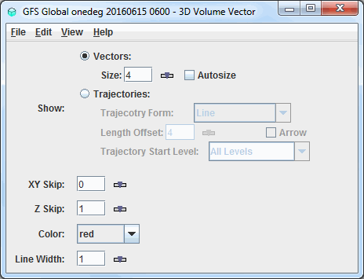

Overview
The 3D Flow Display controls are used to control 3D displays of flow vectors, trajectories, and streamlines derived from wind and vertical velocity data.
The ten types of 3D Flow Displays:
- 3D Vector Cross Section
- 3D Volume Vector
- 3D Volume Vector Colored by Speed
- 3D Volume Vector Colored by Another Parameter
- 3D Volume Trajectory
- 3D Volume Trajectory Colored by Speed
- 3D Volume Trajectory Colored by Another Parameter
- 3D Volume Streamline
- 3D Volume Streamline Colored by Speed
- 3D Volume Streamline Colored by Another Parameter

Image 1: 3D Volume Flow Display Controls
Image 1: 3D Volume Flow Display Controls
Properties
- Show - Switches between displaying Vectors, Trajectories, and Streamlines.
- Vectors - Displays vectors in the Main Display window.
- Size - Changes the length of the vectors.
The Size box is an editable box where the user can enter a new size and press Enter,
or use the slider (
 ) to
change the value.
) to
change the value. - Autosize - Controls the size of the vectors based on zoom level. If the checkbox is checked, the size of the vectors will change proportionally as the zoom level changes. When unchecked, the vectors will remain the same size regardless of zoom level.
- Trajectories - Displays trajectories in the Main Display window.
- Trajectory Form - Allows for selecting the type of trajectory used in the display. The options are Line, Cylinder, Ribbon, and Deform Ribbon.
- Length Offset - Sets the number of timesteps to include in each trajectory.
- Arrow - Adds an arrow head to the trajectories if the Line Trajectory Form is selected.
- Trajectory Start Level - Sets the vertical level where the trajectories will originate from. If 'All Levels' is selected then trajectories will originate from all levels.
- Trajectory End Level - Sets the vertical level where the trajectories will end. If 'All Levels' is selected then trajectories will end at all levels.
- Streamlines - Displays streamlines in the Main Display window.
- Streamline Form - Allows for selecting the type of streamline used in the display. The options are Line, Cylinder, Ribbon, and Deform Ribbon.
- Length Offset - Sets the number of timesteps to include in each streamline.
- Arrow - Adds an arrow head to the streamlines if the Line Streamline Form is selected.
- Smooth Factor - Allows for smoothing the display based on a smoothing factor entered in the text entry box.
- Streamline Start Level - Sets the vertical level where the streamlines will originate from. If 'All Levels' is selected then streamlines will originate from all levels.
- Streamline End Level - Sets the vertical level where the streamlines will end. If 'All Levels' is selected then streamlines will end at all levels.
- Arrow Scale - Sets the size of the arrows of the vectors or trajectories.
- XY Skip - Defines the number of grid points that are skipped to mitigate cluttering in the display in the x/y direction. A skip interval of 0 utilizes all grid points, 1 uses every other grid point, 2 uses every third grid point, etc. This value can be modified by typing a value into the text field and pressing Enter or by using the slider button.
- Z Skip - Defines the number of grid points that are skipped to mitigate cluttering in the display in the z direction. A skip interval of 0 utilizes all grid points, 1 uses every other grid point, 2 uses every third grid point, etc. This value can be modified by typing a value into the text field and pressing Enter or by using the slider button.
- Color - Changes the color of the vectors, streamlines, and trajectories in the display. Note that if the displayed field is derived from speed and direction fields (not u- and v-wind components), or colored by another parameter, the vectors or trajectories will be colored by the speed or the color-by field. In this case, the Color field will be Color Table, where the user can define the enhancement and enhancement range used for the display.
- Line Width - Sets the line width (thickness) in the display. Click on the
 or
put in a value and hit enter to change the value.
or
put in a value and hit enter to change the value.
Menus
Many of the menu items seen utilizing this display are standard options that can be found in the Menus section of the Layer Controls page. However, there are some options that are unique to this display.
The Edit menu has these unique options:
- Color - Sets the color of the vectors, trajectories, or streamlines. This is an option for the 3D Volume Vector, Trajectory, and Streamline display types.
- Color Table - Sets the color enhancement applied to the vectors, trajectories, or streamlines. This is an option for the all display types colored by speed or another parameter.
The View menu has this unique option:
- Use Data Projection - Re-centers the display and resets the zoom level back to the display's initial settings without changing any other preferences that have been modified.